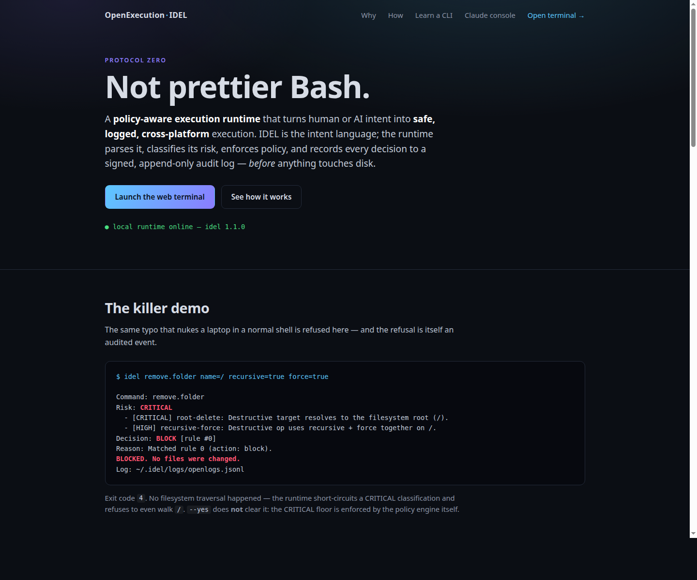

Not prettier Bash.
IDEL is a policy-aware execution runtime that turns human or AI intent into safe, logged, cross-platform execution. The runtime parses intent, resolves it through a registry, classifies risk, applies policy, runs through an adapter, and writes a signed audit record before anything touches disk.
Why people should care
Safety at the call site
Dangerous intent is explicit, and catastrophic targets such as root, home, drive roots, and raw devices are blocked by default.
Policy before execution
Commands map to allow, warn, dry-run, approval, or block based on risk, command, params, source, and environment.
Audit by design
Every decision, adapter, exit code, duration, and result lands in local signed OpenLogs with secret redaction.
AI stays behind the runtime
ChatGPT or Claude can propose intent, but the runtime remains the enforcement boundary for execution.

The current web landing page, served by the local IDEL runtime.